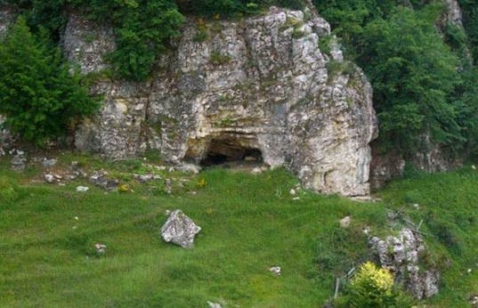
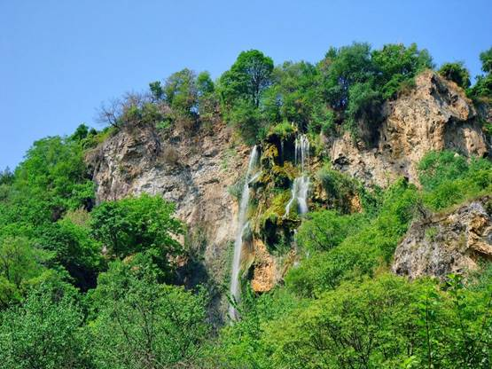

| Наречена на името на Вълчан войвода използвал пещерата с четата си за укритие. Вълчан
войвода е най-странната личност в предосвобожденската ни история. Роден в полите на Странджа планина още много млад повежда чета,
която според легендите е извършила най-големите обири на територията на Османската империя. |
 |
|  | Постепенно се превръща в най-богатият войвода, край чието кале се развяват знамената на 72 чети,
които предвождал. Имал е дори подземна лечебница за ранените хайдути.
Координатите са примерни, най-добре е да попитате местните, които ще ви упътят за пещерата. |